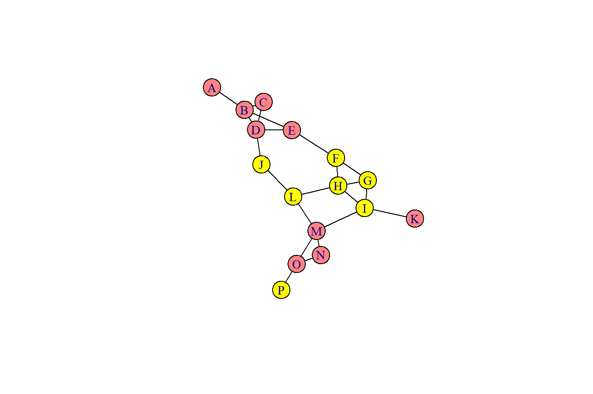
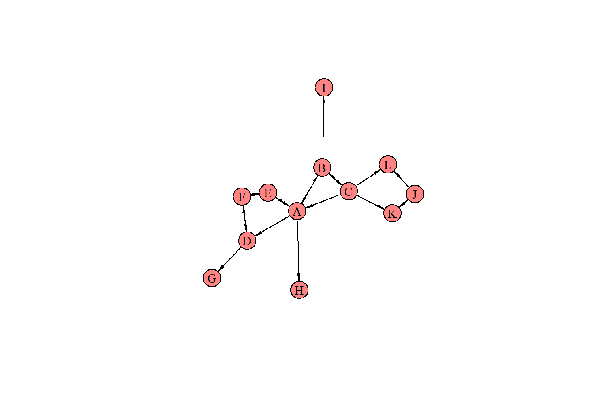
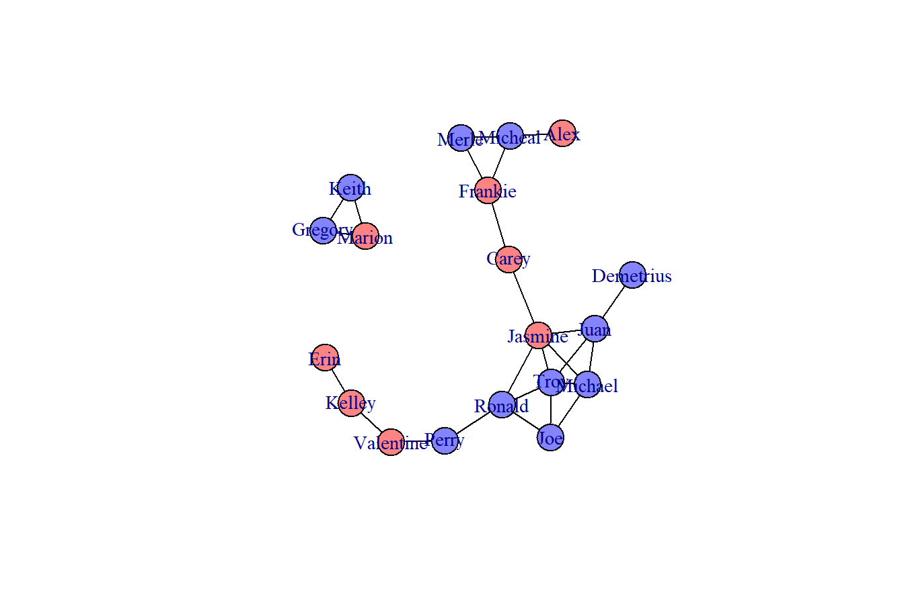
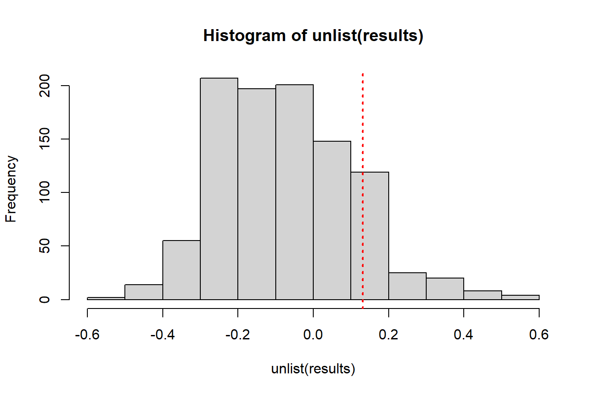
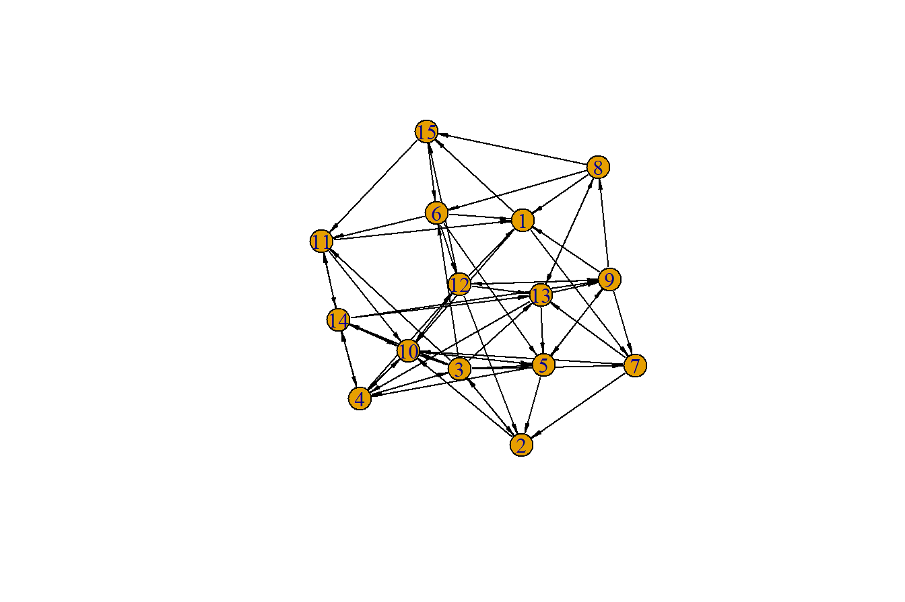
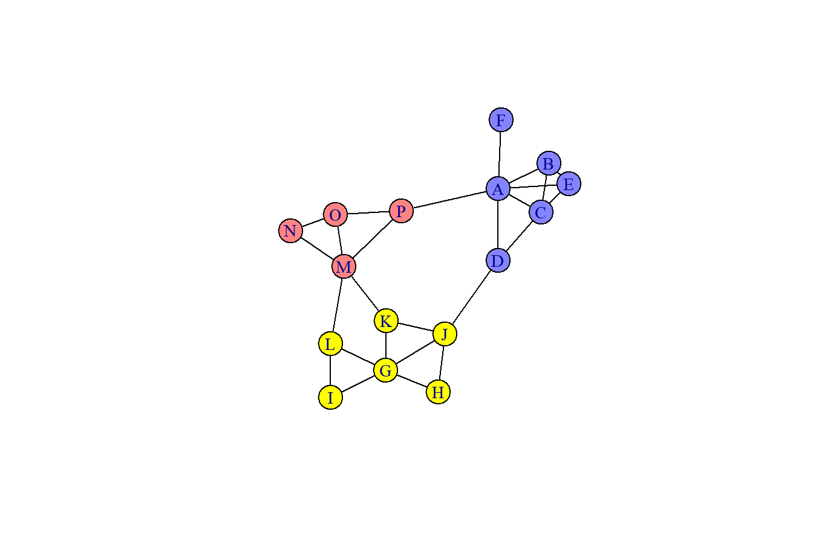
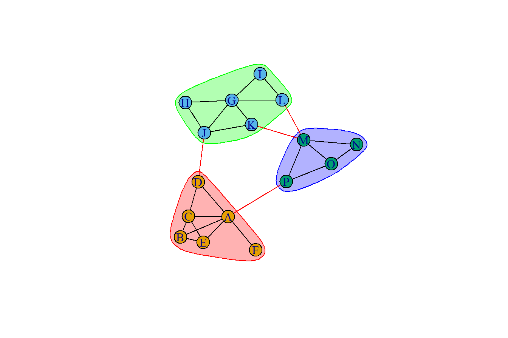
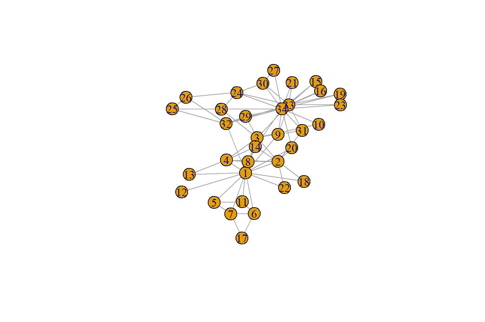
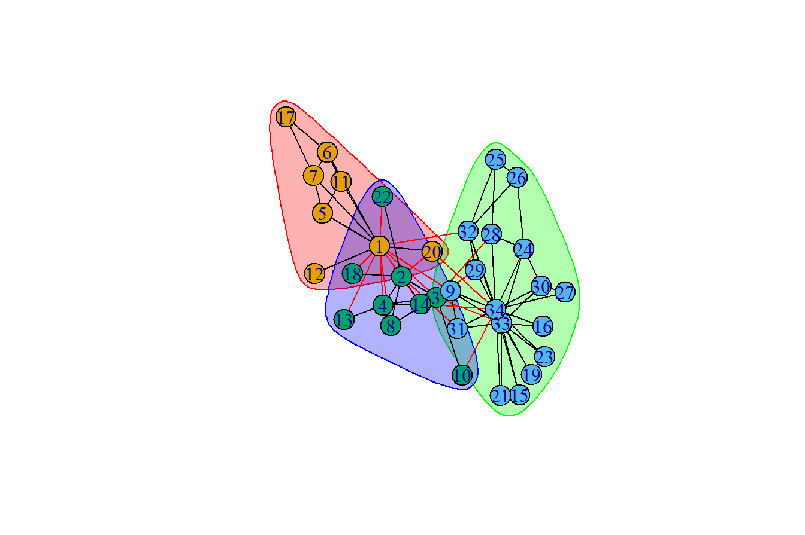
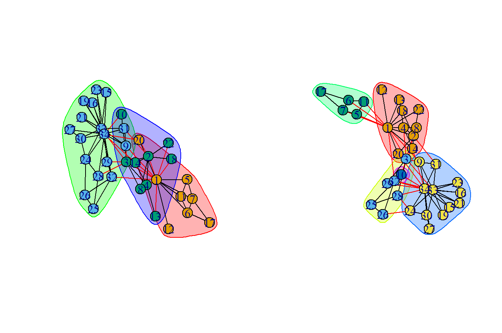

library(tidyverse)
library(igraph)
edges_df <- tribble(
~from, ~to,
"A", "B",
"B", "C",
"B", "D",
"C", "D",
"B", "E",
"D", "E",
"E", "F",
"F", "G",
"G", "H",
"F", "H",
"H", "L",
"L", "J",
"D", "J",
"G", "I",
"H", "I",
"L", "M",
"K", "I",
"I", "M",
"M", "N",
"M", "O",
"N", "O",
"O", "P"
)
nodes_df <- tribble(
~name, ~tipus,
"A", "bátor",
"B", "bátor",
"C", "bátor",
"D", "bátor",
"E", "bátor",
"K", "bátor",
"M", "bátor",
"N", "bátor",
"O", "bátor",
"F", "félénk",
"G", "félénk",
"H", "félénk",
"I", "félénk",
"L", "félénk",
"J", "félénk",
"P", "félénk"
)
g <- graph_from_data_frame(d = edges_df, vertices = nodes_df, directed = F)5 Speciális kapcsolatok
Ebben a fejezetben tovább vizsgáljuk a hálózatok alhálózatokra való felosztását, és annak meghatározását, hogy mely csúcsok kapcsolódnak egymáshoz jobban, mint mások.
5.1 A fejezet fogalmai
- asszortativitás
-
Milyen valószínűséggel kapcsolódik egymáshoz két olyan csúcs, amelyek valamilyen közös tulajdonságon osztoznak.
- reciprocitás
-
Egy irányított hálózat reciprocitása megegyezik a szimmetrikus élek arányával. Ez azon kimenő élek aránya, amelyeknek bejövő élük is van.
- közösség
-
Azon csúcsok halmaza, amelyek szorosabban kapcsolódnak egymáshoz, mint a többi csúcshoz a hálózatban.
5.2 Szoros kapcsolatok: asszortativitás és kölcsönösség
A fejezetben használt függvények:
assortativity()- asszortativitás kiszámolása a hálózatban egy adott tulajdonság alapjánreciprocity()- a reciprocitás kiszámítása irányított hálózatban
Egy hálózatban a következő kérdés is érdekes lehet: a csúcsok véletlenszerűen társulnak más csúcsokhoz, vagy inkább a hasonló csúcsokhoz kapcsolódnak. Például az azonos nemű gyerekek nagyobb valószínűséggel jelölik-e egymást barátnak egy baráti hálózatban, illetve az azonos politikai meggyőződésű személyek nagyobb valószínűséggel válaszolnak-e egymás posztjára.
Formálisabban a hálózatelemzésben az “asszortativitás” kifejezést annak meghatározására használják, hogy milyen valószínűséggel kapcsolódik egymáshoz két olyan csúcs, amelyek valamilyen közös tulajdonsággal rendelkeznek. Ezek a tulajdonságok lehetnek kategorikusak, például politikai párt vagy nem, de lehetnek számszerűek is, például életkor.
A következő hálózatban két kategóriánk van: bátor és félénk.
# alapértelmezés szerint minden címkéjének színe legyen sárga
vlc <- rep("yellow", vcount(graph = g))
# a megfelelő csúcsok címkéjének színe legyen piros
vlc[V(g)$tipus %in% 'bátor'] <- "#FE8484"
# induló megjelenés
plot(g,
vertex.color = vlc,
vertex.label.cex = .9,
edge.color = 'black',
vertex.size = 18,
layout = layout_nicely(g))
A hálózat asszortativitását az {igraph} csomag assortativity() függvényével számolhatjuk ki. A függvény két bemenetet vár. Az első a gráf objektum, a második az egyes csúcsokhoz tartozó attribútumok vektora. Ha az attribútumok már numerikusak – például egy társas hálózatban egyének életkora vagy jövedelme –, akkor ezek az értékek közvetlenül használhatók. Ha az attribútumok kategorikusak, például nem vagy politikai párthovatartozás, akkor számokká kell konvertálni őket. Ez egyszerűen megtehető, ha minden attribútumszintet faktorszintekre konvertálunk: 1, 2, 3 stb. értékekké.
# a "bátor" és "félénk" kategóriák kovertálása 1-re, és 2-re
values <- as.numeric(factor(V(g)$tipus))# az asszortativitás kiszámolása
assortativity(graph = g, types1 = values)
#> [1] 0.45Az asszortativitás értéke -1 és +1 között lehet. A 0 azt jelzi, hogy nincs általános preferenciális kötődési minta. A +1 azt jelzi, hogy az egyének csak hasonló egyedekhez kötődnek, a -1 pedig azt, hogy az egyének aktívan kerülik a hasonló egyéneket. A most kapott 0,45-ös érték viszonylag magas. Ahhoz, hogy megértsük, milyen jelentős mértékben magas, randomizációs tesztet kell végeznünk.
Egy másik gyakran számolt asszortativitási mutató a fokszám asszortativitás. Azt mutatja, hogy a magas fokú csúcsok előszeretettel kapcsolódnak-e más magas fokú csúcsokhoz. Az {igraph} csomagban az assortativity.degree() függvényt használjuk a fokszám asszortativitás kiszámolására. Az első argumentum a gráfobjektum, a második pedig részletezi, hogy a gráf irányított vagy irányítatlan.
A példában negatív értéket kapunk a fokszám asszortativitásra, ami azt jelzi, hogy a magas fokszámú egyének inkább nem kapcsolódnak más, magas fokszámú egyénekhez.
# fokszám asszortativitás kiszámítása
assortativity.degree(graph = g, directed = FALSE)
#> [1] -0.3134328A kapcsolatok szorosságának másik mércéje az irányított hálózatokban értelmezhető kölcsönösség (reciprocitás). Egy irányított hálózat reciprocitása megegyezik a szimmetrikus élek arányával. Ez azon kimenő élek aránya, amelyeknek bejövő élük is van.
library(igraph)
g2 <- graph_from_literal(A--+H, A--+D, A+-+E, A+-+B, C--+A, E+-+F, F+-+D, D--+G, B--+I, B+-+C, C--+L, C--+K, K+-+J, J--+L)
V(g2)$color <- "#FE8484"
plot(g2,
vertex.label.color = "black",
vertex.label.cex = .9,
edge.arrow.size = 0.4,
edge.arrow.width = 0.5,
edge.color = 'black',
vertex.size = 18)
# élek száma
ecount(g2)
#> [1] 20A példahálózatban 20 él van. 8 közülük az egyetlen él két csúcs között. A B-től I-ig tartó él egy példa. A többi 12 él kölcsönös kapcsolatban van. Van egy él J-től K-ig és K-től J-ig. Ennek a gráfnak ezért 0,6 a reciprocitása (mivel az élek 60%-a (20-ból 12) ezekben a reciprok kapcsolatokban van). Az {igraph} csomagban a reciprocitás a reciprocity() függvény segítségével számítható ki.
# az irányított gráf reciprocitása
reciprocity(g2)
#> [1] 0.65.2.1 Feladat
Ebben a feladatban meghatározzuk egy korábban már használt baráti hálózat nemre vonatkozó asszertativitását. Tudjuk, ez annak a mértéke, hogy az azonos nemű csúcsok milyen mértékben kapcsolódnak egymáshoz. A fokszám asszortativitást is kiszámoljuk, amely meghatározza, hogy a csúcsok milyen mértékben kapcsolódnak más, hasonló fokú csúcsokhoz.
Készítsünk egy feltáró ábrát a barátsági hálózat objektumról a plot() segítségével.
# adatok beolvasása
friends2_edges_df <- rio::import(file = "adat/friends2_edges_df.xlsx")
friends2_nodes_df <- rio::import(file = "adat/friends2_nodes_df.xlsx")
# igraph objektum létrehozása attribútumok felvitelével együtt
friends2_g <- graph_from_data_frame(d = friends2_edges_df, vertices = friends2_nodes_df, directed = FALSE)Feltáró ábra készítése:
# alapértelmezés szerint minden címkéjének színe legyen sárga
vlc <- rep("#8484fe", vcount(graph = friends2_g))
# a megfelelő csúcsok címkéjének színe legyen piros
vlc[V(friends2_g)$gender %in% 'F'] <- "#FE8484"
# induló megjelenés
plot(friends2_g,
vertex.color = vlc,
vertex.label.cex = .9,
edge.color = 'black',
vertex.size = 18,
layout = layout_nicely(friends2_g))
Konvertáljuk az egyes csúcsok “nem” attribútumait számmá a factor(), majd az as.numeric() használatával.
# a nem numerikussá konvertálása
values <- as.numeric(factor(V(friends2_g)$gender))Számítsuk ki a nemek alapján az asszortativitást az assortativity() függvény segítségével. Az első argumentum a gráfobjektum, a második paraméter a számokká konvertált nemek lesznek.
# a nem alapján számolt asszortativitás kiszámítása
assortativity(friends2_g, values)
#> [1] 0.1319444Számítsuk ki a hálózat fokszám asszortivitását az assortativity.degree() segítségével. Az első argumentum a gráf objektum lesz.
# A fokszám asszortativitás kiszámítása
assortativity.degree(friends2_g, directed = FALSE)
#> [1] 0.46153855.2.2 Feladat
A randomizált megoldásokat az asszortativitás értékelésére is felhasználhatjuk.
Használjuk az assortativity() függvényt a friends2_g gráfobjektum asszortativitásának kiszámításához nemek alapján. Rendeljük hozzá ezt az értéket a observed.assortativity objektumhoz.
# számoljuk ki a megfigyelt asszortativitást
observed.assortativity <- assortativity(friends2_g, values)Egy for cikluson belül számítsuk ki a friends2_g hálózat asszortativitását az assortativity() segítségével, miközben véletlenszerűen módosítjuk a values objektum értékét a sample() segítségével. A sample() használata véletlenszerűen módosítja az egyes csúcsok nemét (azaz a nemnek megfelelő numerikus értékeket).
# számoljunk ki 1000 nemre vonatkozó asszortativitást, amelyben a nem véletlenszerűen lett a személyekhez rendelve
results <- vector('list', 1000)
for(i in 1:1000){
results[[i]] <- assortativity(friends2_g, sample(values))
}A fenti a permutációs eljárás után, ábrázoljuk az asszortativitási értékek eloszlását a hist() segítségével, és adjunk hozzá egy piros függőleges vonalat a megfigyelt asszortativitási értéknek megfelelően (observed.assortativity).
# rajzoljuk meg az asszortativitás eloszlását, és adjuk hozzá a piros vonalként a megfigyelt asszortativitást
hist(unlist(results))
abline(v = observed.assortativity, col = "red", lty = 3, lwd=2)
5.2.3 Feladat
Az irányított hálózat reciprocitása a szimmetrikus élek arányát tükrözi. Ez nem más, mint azon kimenő élek aránya, amelyeknek bejövő élük is van. Általában annak meghatározására használják, hogy az irányított hálózatok mennyire kapcsolódnak egymáshoz. Egy ilyen hálózatra példa lehet a csimpánzok ápolása. Egyes csimpánzok ápolgathatnak egy másikat, de az adott egyed nem ápolja őket, míg más csimpánzok ápolhatják egymást, és így kölcsönös kötelék alakul ki.
Ebben a feladatban egymást ápoló csimpánzok hálózatát készítjük el (chimp_g). Készítsünk ábrát a plot() segítségével. Állítsa a nyíl méretét 0,4-re az edge.arrow.size= argumentum használatával, a nyíl szélességét pedig 0,5-re az edge.arrow.width= argumentum használatával.
chimp_g <-
graph_from_data_frame(directed = T, d = tribble(
~from, ~to,
1, 15,
6, 1,
8, 1,
9, 1,
11, 1,
12, 1,
3, 2,
5, 2,
7, 2,
12, 2,
2, 3,
4, 3,
5, 4,
10, 4,
13, 4,
14, 4,
3, 5,
6, 5,
9, 5,
10, 5,
13, 5,
3, 6,
8, 6,
15, 6,
1, 7,
3, 7,
9, 7,
8, 15,
9, 8,
13, 8,
5, 9,
12, 9,
13, 9,
14, 9,
1, 10,
2, 10,
3, 10,
4, 10,
7, 10,
11, 10,
12, 10,
14, 10,
3, 11,
6, 11,
14, 11,
15, 11,
4, 12,
6, 12,
9, 12,
12, 15,
3, 13,
7, 13,
8, 13,
12, 13,
14, 13,
3, 14,
4, 14,
10, 14,
11, 14))# hálózat megjelenítése
plot(chimp_g,
edge.color = "black",
edge.arrow.size = 0.4,
edge.arrow.width = 0.5)
Számoljuk ki a gráf reciprocitását a reciprocity() segítségével.
# reciprocitás kiszámítása
reciprocity(chimp_g)
#> [1] 0.27118645.3 Közösségek felderítése
A fejezetben használt függvények:
cluster_fast_greedy()- fast greedy modularitás eljáráscluster_edge_betweenness()- él közöttiség modularitásai eljárás
A klikkek azonosítása, valamint az asszortativitás és reciprocitás kiszámítása bizonyos információkkal szolgál számunkra a hálózat csúcs-kapcsolódási mintáiról. Ennek még formálisabb megközelítési módja a közösségek felderítése.
Ha egy hálózatról azt mondják, hogy közösségi struktúrával rendelkezik, akkor lehetőség van egyedi csúcshalmazok azonosítására. Az egyes csúcshalmazokon belül a tagok közötti kapcsolatok sűrűbbek lesznek, mint ami a különböző csúcshalmazok közötti kapcsolatokra jellemző.
library(tidyverse)
library(igraph)
edges_df <- tribble(
~from, ~to,
"A", "B",
"A", "C",
"A", "D",
"A", "E",
"A", "F",
"A", "P",
"B", "C",
"B", "E",
"C", "D",
"C", "E",
"D", "J",
"J", "H",
"J", "G",
"J", "K",
"G", "H",
"G", "K",
"G", "I",
"G", "L",
"I", "L",
"K", "M",
"L", "M",
"M", "N",
"M", "O",
"M", "P",
"P", "O",
"N", "O"
)
nodes_df <- tribble(
~name, ~tipus,
"A", "1",
"B", "1",
"C", "1",
"D", "1",
"E", "1",
"F", "1",
"J", "2",
"G", "2",
"H", "2",
"I", "2",
"K", "2",
"L", "2",
"M", "3",
"N", "3",
"O", "3",
"P", "3"
)
g3 <- graph_from_data_frame(d = edges_df, vertices = nodes_df, directed = F)# alapértelmezés szerint minden címkéjének színe legyen sárga
vlc <- rep("yellow", vcount(graph = g3))
# a megfelelő csúcsok címkéjének színe legyen piros
vlc[V(g3)$tipus %in% '3'] <- "#FE8484"
vlc[V(g3)$tipus %in% '1'] <- "#8484fe"
# induló megjelenés
plot(g3,
vertex.color = vlc,
vertex.label.cex = .9,
edge.color = 'black',
vertex.size = 18,
layout = layout_nicely(g3))
A fenti hálózatban látható, hogy a 16 csúcs három csoportba sorolható. Az egyes csoportokon belül – piros, kék és sárga – a csúcsok sokkal nagyobb valószínűséggel kapcsolódnak más, azonos színű csúcsokhoz, mint a nem saját csoporthoz tartozó csúcshoz. Gyakran az ilyen típusú csoportokat „közösségeknek” nevezik, bár területtől függően „moduloknak”, „csoportoknak” vagy „klasztereknek” is nevezhetők. Valós hálózatokban a közösségi struktúrák nagyon gyakoriak, és a közösségek észlelés nagyon hasznos lehet, különösen nagy hálózatokban, mivel segít azonosítani a hálózat funkcionális alegységeit. Ilyenek például a középiskolai hálózatban működő klikkek is.
A közösségészlelés mögött meghúzódó általános elv viszonylag egyszerű: azonosítani kell azokat a csúcsokat, amelyek szorosabban kötődnek egymáshoz, mint a többihez a hálózatban, Azonban közösségek megtalálása nagyon számításigényes, különösen nagy hálózatok esetén. Ennek ellenére számos algoritmust fejlesztettek ki, és az {igraph} csomag is több lehetőséget tartalmaz. Saját adataink alapján érdemes több módszert is kipróbálni hogy melyik tűnik a leghasznosabbnak, ugyanis mindegyik algoritmusnak más az erőssége és a gyengesége.
Ebben a részben két különböző eljárást fogunk használni: a fast greedy modularitás eljárást és az él közöttiség modularitásai eljárást. A fast greedy úgy működik, hogy egyre nagyobb közösségeket próbál építeni úgy, hogy minden közösséghez egyenként hozzáadja a csúcsokat, és minden lépésnél modularitási pontszámot mér. A modularitási pontszám annak mutatója, hogy az egymással összefüggő élek hogyan viszonyulnak egymáshoz a közösségeken belül, illetve a közösségek között. Az {igraph} csomagban a cluster_fast_greedy() függvény a bemenő gráfobjektumra elvégzi a fenti eljárást.
# fast greedy modularitás eljárást
cluster_fast_greedy(g3)
#> IGRAPH clustering fast greedy, groups: 3, mod: 0.5
#> + groups:
#> $`1`
#> [1] "A" "B" "C" "D" "E" "F"
#>
#> $`2`
#> [1] "J" "G" "H" "I" "K" "L"
#>
#> $`3`
#> [1] "M" "N" "O" "P"
#> Az outputban láthatók az egyes közösségek, és az egyes csúcsok közösségi tagsága is.
A fast greedy eljárással szemben az él közöttiség modularitásai eljárás egy felosztó módszer, amely úgy működik, hogy a hálózatot egyre kisebb darabokra osztja, amíg olyan éleket nem talál, amelyeket “hídnak” tekint a közösségek között.
# él közöttiség modularitásai eljárás
cluster_edge_betweenness(g3)
#> IGRAPH clustering edge betweenness, groups: 3, mod: 0.5
#> + groups:
#> $`1`
#> [1] "A" "B" "C" "D" "E" "F"
#>
#> $`2`
#> [1] "J" "G" "H" "I" "K" "L"
#>
#> $`3`
#> [1] "M" "N" "O" "P"
#> Az output a fentiekkel megegyezik.
További függvényekkel a közösségre vonatkozó információk is kinyerhetők. Minden közösségészlelési eljárás több információt állít elő egy közösségi objektumban. A length(), sizes() és a membership() függvények segítségével gyorsan kinyerhető információ arról, hogy hány közösség van, hány eleműek a közösségek, és mely csúcsok tartoznak az adott közösséghez.
# a fast greedy eljárás eredményének elmentése az x objektumba
x <- cluster_fast_greedy(g3)# közösségek száma
length(x)
#> [1] 3# az egyes közösségek létszáma
sizes(x)
#> Community sizes
#> 1 2 3
#> 6 6 4# az egyes csúcsok tagsága
membership(x)
#> A B C D E F J G H I K L M N O P
#> 1 1 1 1 1 1 2 2 2 2 2 2 3 3 3 3Az {igraph} csomagban lehetőség van a hálózatról egyszerű diagramok készítésére is, amelyek színnel mutatják meg a közösség minden csúcsát. Ehhez a közösségi objektumot és a gráfobjektumot kell szerepeltetni a plot() függvényben.
# közösségek megjelenítése
plot(x, g3)
5.3.1 Feladat
Az első közösségészlelési módszer, amelyet kipróbálunk, a fast greedy közösségészlelés. A Zachary Karate Club hálózatát fogjuk használni. Ez a közösségi hálózat 34 klubtagot és 78 élt tartalmaz. Mindegyik él azt jelzi, hogy az a két klubtag a karate klubon kívül és a klubban is érintkezett. A hálózat segítségével meghatározhatjuk, hogy hány alközösség van a hálózatban, és mely klubtagok melyik alcsoporthoz tartoznak. A hálózatokat a közösségi tagság alapján is megrajzolhatjuk.
Hozzuk létre a hálózatot és jelenítsük meg.
club_g <-
graph_from_data_frame(directed = F, d = tribble(
~from, ~to,
1, 2,
1, 3,
1, 4,
1, 5,
1, 6,
1, 7,
1, 8,
1, 9,
1, 11,
1, 12,
1, 13,
1, 14,
1, 18,
1, 20,
1, 22,
1, 32,
2, 3,
2, 4,
2, 8,
2, 14,
2, 18,
2, 20,
2, 22,
2, 31,
3, 4,
3, 8,
3, 28,
3, 29,
3, 33,
3, 10,
3, 9,
3, 14,
4, 8,
4, 13,
4, 14,
5, 7,
5, 11,
6, 7,
6, 11,
6, 17,
7, 17,
9, 31,
9, 33,
9, 34,
10, 34,
14, 34,
15, 33,
15, 34,
16, 33,
16, 34,
19, 33,
19, 34,
20, 34,
21, 33,
21, 34,
23, 33,
23, 34,
24, 26,
24, 28,
24, 33,
24, 34,
24, 30,
25, 26,
25, 28,
25, 32,
26, 32,
27, 30,
27, 34,
28, 34,
29, 32,
29, 34,
30, 33,
30, 34,
31, 33,
31, 34,
32, 33,
32, 34,
33, 34))
plot(club_g)
Használjuk a cluster_fast_greedy() függvényt egy közösségi objektum létrehozásához. Rendeljük ezt a kc objektumhoz.
# fast greedy közösségészlelési eljárás
kc <- fastgreedy.community(club_g)Használjuk a sizes() függvényt a kc objektumon annak meghatározására, hogy hány közösséget észleltek, és hány klubtag van mindegyikben.
# közösségek száma és létszáma
sizes(kc)
#> Community sizes
#> 1 2 3
#> 8 17 9A membership() függvény segítségével jelenítsük meg, hogy mely klubtagok melyik közösséghez tartoznak.
# melyik klubtag, melyik közösséghez tartozik
membership(kc)
#> 1 2 3 4 5 6 7 9 10 14 15 16 19 20 21 23 24 25 26 27 2...
#> 1 3 3 3 1 1 1 2 3 3 2 2 2 1 2 2 2 2 2 2 ...
#> 30 31 32 33 8 11 12 13 18 22 17 34
#> 2 2 2 2 3 1 1 3 3 3 1 2Az alapértelmezett közösségi ábra létrehozásához az ismert plot() függvényt használhatjuk. Az első argumentum a kc objektum, a második argumentum pedig a club_g gráfobjektum.
# a közösségeket tartalmazó hálózati ábra
plot(kc, club_g)
5.3.2 Feladat
Alternatív közösségészlelési módszer az él közöttiség eljárás. Ebben a feladatban megismételjük a karate klub közösségészlelését, de most ezzel a módszerrel, majd vizuálisan összehasonlítjuk az eredményeket a fast greedy módszerrel kapott közösségekkel.
Használjuk a cluster_edge_betweenness() függvényt a club_g gráf objektumon, és a gc objektumban tároljuk el az eredményt.
# él közöttiség eljárás futtatása
gc <- cluster_edge_betweenness(club_g)Határozzuk meg a közösségek nagyságát és számát.
# a közösségek létszáma
sizes(gc)
#> Community sizes
#> 1 2 3 4 5
#> 10 6 5 12 1Két ábrát a par(mfrow = c(1, 2)) segítségével tudunk egymás mellé helyezni. Az első diagram az előző kc közösségi objektumot, a második a jelen gc közösségi objektumot tartalmazza.
# közösségészlelés két módszerrel
par(mfrow = c(1, 2))
plot(kc, club_g)
plot(gc, club_g)
5.4 Interaktív hálózatok
A fejezetben használt függvények:
graphjs()- interaktív vizualizáció a{threejs}csomagból
Eddig ebben a kurzusban az {igraph} csomag segítségével készítettünk ábrákat a hálózatokról. Láttuk, ezek az ábrák gyorsan és viszonylag egyszerűen elkészíthetők. Sok más R csomag is létezik azonban, amelyek hálózatok vizualizációját segítik. Például {statnet}, {ggnet}, {ggnetwork}, {ggraph}, {visNetwork}, {networkD3}, {sigma} és a {threejs}. Mindegyiknek megvan a maga erőssége és gyengesége. Egyesek nagyobb hálózatokhoz, mások kisebb hálózatokhoz hasznosak. Egyesek nagyon jók statikus grafikonok készítésére, míg mások jobban alkalmasak olyan vizualizációk készítésére, amelyekkel a felhasználó interakcióba léphet. Például úgy, hogy a csúcsok fölé vihetjük az egérmutatót, és így további információkat kaphatunk az egyénekről, vagy akár dinamikusan mozgathatjuk a hálózatot. Fenti lehetőségek közül több integrálva van JavaScript-könyvtárakkal.
Jelen alfejeztben megtudhatjuk, hogyan készíthetünk interaktív hálózati diagramokat a {threejs} csomag használatával. Ez a csomag különösen hasznos nagy hálózatok megjelenítéséhez, és nagyon jól integrálható az {igraph} csomaggal. Amikor létrehozzuk ezeket a vizualizációkat, használhatja az egeret a hálózat elforgatására, nagyítására és kicsinyítésére, valamint a csúcsok mozgatására. Ha a csúcsok fölé viszük az egeret, az egy felugró szövegen keresztül felfedi az egyén adatait.
Alapvető vizualizáció létrehozásához alkalmazzuk a graphjs() függvényt egy igraph objektumra. Ez egy teljesen interaktív hálózatot hoz létre.
# library(threejs)
# graphjs(g3)A csúcsok neveinek hozzáadásához és a színek megváltoztatásához mindössze annyit kell tennünk, hogy beállítja a megfelelő csúcsattribútumokat az igraph objektumban.
# csúcsnevek beállítása
g3 <- set_vertex_attr(g3,
"label",
value = V(g3)$name)
# csúcsok színeinek beállítása
g3 <- set_vertex_attr(g3,
"color",
value = 'mistyrose')
# graphjs(g3, vertex.size = 1)A graphjs() függvényen belül az ábra sok aspektusa megváltoztatható. A fenti példában megváltoztatjuk a csúcsméretet. Ha a csúcs fölé visszük az egeret, meg fog jelenni a csúcs címkéje.
5.4.1 Feladat
Eddig kizárólag az {igraph} csomagot használtuk az alapvetően statikus hálózati diagramok elkészítéséhez. Számos csomag áll azonban rendelkezésre hálózati ábrák készítéséhez. Az egyik nagyon hasznos csomag a {threejs}, amely lehetővé teszi interaktív hálózati vizualizációk készítését. Ez a csomag is zökkenőmentesen integrálható az {igraph} csomaggal. Ebben a feladatban elkészítjük a karate klub hálózatának alapszintű interaktív hálózati megjelenését a {threejs} csomag segítségével. Miután elkészítettük a vizualizációt, mozgassuk a hálózatot az egérrel. Képesnek kell lennünk a hálózat kicsinyítésére és nagyítására, valamint a hálózat elforgatására.
Először a set_vertex_attr() használatával hozzunk létre egy új csúcs attribútumot color néven, ami a dodgerblue értéket vegye fel.
library(igraph)
library(threejs)
# beállítjuk a csúcsok 'color' attribútumát 'dodgerblue'-re
club_g <- set_vertex_attr(club_g, "color", value = "dodgerblue")Ábrázoljuk a club_g hálózatot a {threejs} graphjs() függvényével. Az első argumentum a club_g gráfobjektum legyen. Állítsuk a csúcs méretét 1-re.
# rajzoljuk meg a hálózatot 1-es csúcsmérettel
# graphjs(club_g, vertex.size = 1)5.4.2 Feladat
A hálózatok megjelenítése során érdemes módosítani a csúcsok méretét, ezzel szemléltethetjük a relatív fontosságukat. Ez a {threejs} csomagban is elvégezhető. Ebben a feladatban létrehozunk egy interaktív {threejs} diagramot a karate klub hálózatról úgy, hogy a csúcsok méretét a relatív sajátvektor centralitásukra alapozzuk.
Számítsa ki az egyes csúcsok sajátvektor centralitását az eigen_centrality() segítségével, és tároljuk az értékeket az ec objektumban.
# sajátvektor centralitások vektora
ec <- as.numeric(eigen_centrality(club_g)$vector)Az sqrt() használatával az ec értékeiből hozzunk létre egy új v vektort, amely egyenlő az eredeti sajátvektor centralitás négyzetgyökének ötszörösével.
# sajátvektor centralitások négyzetgyökének ötszörösét számoljuk
v <- 5*sqrt(ec)Ábrázoljuk a hálózatot a {threejs} csomag graphjs() függvényének használatával, és állítsuk be a vertex.size= argumentumot a v értékeire.
# interaktív megjelenítés
# graphjs(club_g, vertex.size = v)5.4.3 Feladat
Végül ebben az utolsó feladatban egy olyan interaktív ábrát fogunk létrehozni, amely a közösségi tagságuk alapján színezi a csúcsokat. A közösségek észlelését a fast greedy módszerrel végezzük el.
Használjuk a membership() függvényt a kc közösségi igraph objektumon, így létrehozzunk egy i vektort az egyes csúcsok közösségek tagságáról.
# az i objektum a csúcsok tagságát fogja tartalmazni
i <- membership(kc)Ellenőrizzük, hogy hány közösség van a sizes() függvény segítségével a kc közösségi igraph objektumban.
# meggyőződünk, hogy 3 csoport van, így 3 színre lesz szükségünk
sizes(kc)
#> Community sizes
#> 1 2 3
#> 8 17 9A set_vertex_attr() segítségével adjunk hozzá egy color nevű csúcsattribútumot a club_g gráfobjektumhoz. A hozzáadandó értékek az i objektumhoz rendelt tagságon alapuló színek lesznek.
# a csúcsok színének beállítása a közösségi tagságuk alapján
club_g <- set_vertex_attr(club_g, "color", value = c("yellow", "blue", "red")[i])Ábrázolja a háromdimenziós gráfot a graphjs() függvény segítségével.
# interaktív megjelenítés
# graphjs(club_g)